Swapping the reference genome or the aligner leaves almost all of a brain cis-eQTL map exactly where it was. The exception is a small and specific minority of the genome — and it is the part that is difficult to align because it varies so much between people, which is the same reason it carries disease.
The T2T-CHM13 assembly closed the gaps that GRCh38 left open. The natural question for anyone holding a genotype-plus-expression cohort is whether that completeness changes the answers — not in principle, but in the specific, countable sense of whether you call the same genes as eQTLs.
Answering it requires holding everything else still. This analysis uses the BrainVar
developmental brain cohort, 225 donors, and processes it four separate times. Two
references, GRCh38 and T2T-CHM13, crossed with two alignment strategies, linear and
pangenome-graph. The four arms are labelled linear · GRCh38,
graph · GRCh38, linear · T2T and graph · T2T
throughout. Every arm carries its own genotypes, its own genotype principal components,
its own expression covariates, and its own gene universe called natively against its own
reference; nothing is lifted over between arms to make them comparable, because lifting
over is exactly the operation whose necessity is under test.
Because all four arms run the same code with the same parameters, a difference between them is attributable to the reference and the aligner. That is the design's whole value: the two factors are crossed, so each can be read off separately, and an effect that appears under only one level of the other factor is identifiable as exactly that.
Expression data carries large amounts of structure unrelated to genotype — batch, cell composition, RNA quality, developmental stage. The standard remedy is to include the leading principal components of the expression matrix as covariates. Too few and that structure inflates the noise; too many and you start absorbing the genetic signal itself.
The sweep runs ten values of k from 5 to 50 in all four arms, with permutation testing throughout. The aggregate curve peaks at k = 45 with 12,294 eGenes, against 12,181 at k = 35.
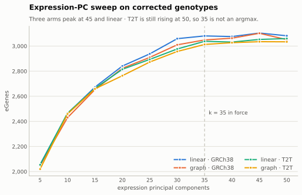
| Arm | k = 5 | k = 10 | k = 15 | k = 20 | k = 25 | k = 30 | k = 35 | k = 40 | k = 45 | k = 50 | Peak |
|---|---|---|---|---|---|---|---|---|---|---|---|
| linear · GRCh38 | 2,057 | 2,463 | 2,673 | 2,841 | 2,938 | 3,059 | 3,081 | 3,076 | 3,104 | 3,082 | k = 45 |
| graph · GRCh38 | 2,049 | 2,430 | 2,653 | 2,823 | 2,910 | 3,010 | 3,049 | 3,063 | 3,102 | 3,051 | k = 45 |
| linear · T2T | 2,054 | 2,466 | 2,663 | 2,815 | 2,894 | 2,977 | 3,038 | 3,032 | 3,053 | 3,060 | k = 50 |
| graph · T2T | 2,020 | 2,459 | 2,659 | 2,764 | 2,873 | 2,957 | 3,013 | 3,027 | 3,035 | 3,034 | k = 45 |
| Aggregate | 8,180 | 9,818 | 10,648 | 11,243 | 11,615 | 12,003 | 12,181 | 12,198 | 12,294 | 12,227 | k = 45 |
An unresolved choice. Every map in this analysis was built at k = 35, on the understanding that 35 was the maximum of the T2T aggregate curve. The sweep does not support that: the T2T aggregate peaks at k = 50 (6,094 eGenes against 6,051 at 35). The surviving argument for 35 is a balance argument about gene biotypes rather than a maximum, and it has not been re-checked against the by-biotype curve. Choosing 35 costs each arm between 0.7 and 1.7 percent against its own optimum, so the stakes are modest — but the stated reason for the choice does not hold, and that is recorded rather than papered over.
With k fixed, each arm gets a permutation-based cis-eQTL map: for every gene, the best variant within the cis window, with a gene-level empirical p-value and Benjamini-Hochberg correction across genes.
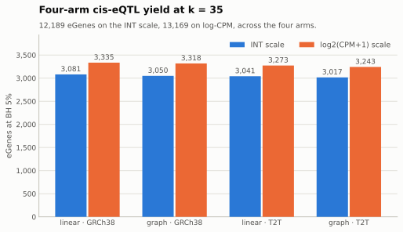
| Arm | Genes tested | eGenes, INT scale | eGenes, log2(CPM+1) |
|---|---|---|---|
| linear · GRCh38 | 18,273 | 3,081 | 3,335 |
| graph · GRCh38 | 18,273 | 3,050 | 3,318 |
| linear · T2T | 18,114 | 3,041 | 3,273 |
| graph · T2T | 18,114 | 3,017 | 3,243 |
| Total | 12,189 | 13,169 |
Two things stand out. The four arms land within about two percent of each other (3,017 to 3,081 eGenes on the inverse-normal scale), which is the reassuring result: swapping the reference genome or the aligner does not move the headline count much. And the expression scale matters more than the reference does — log2(CPM+1) yields 13,169 eGenes against 12,189 for the inverse-normal transform, a gap larger than any between-arm difference.
That second observation is the hinge of the genotype×sex analysis further down. The first — that four independently processed arms land within two percent of each other — is the one worth pressing on, because a matching headline count is a weak form of agreement and everything that follows is an attempt to find out how weak.
The useful result has to be stated in this order, because the second half only means something against the first. Most people believe that reference and aligner choice do not much matter for genetic disease research. For most of the genome they are right, and confirming that is the first job here.
Every variant that survives in both arms of a contrast, matched on gene and on exact normalised allele, gives a pair of test statistics that can be compared directly.
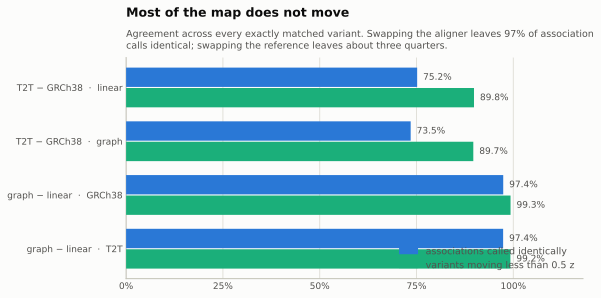
| Contrast | Correlation of z | Variants moving < 0.5 z | Associations called identically | Genes that moved |
|---|---|---|---|---|
| T2T − GRCh38 · linear | 0.9456 | 89.8% | 75.2% | 8.8% |
| T2T − GRCh38 · graph | 0.9407 | 89.7% | 73.5% | 8.9% |
| graph − linear · GRCh38 | 0.9976 | 99.3% | 97.4% | 5.4% |
| graph − linear · T2T | 0.9974 | 99.2% | 97.4% | 6.6% |
Across every exactly matched variant-gene pair. An association is "called" when |z| reaches 4, roughly p = 6×10⁻⁵. The final column counts genes whose mean |Δ Z| across their cis variants is an outlier at an estimated 5% false-discovery proportion.
Changing the aligner is close to doing nothing: the two arms correlate at 0.9974, and 97.4% of the associations either arm would report are reported by both. Changing the reference moves more — correlation 0.941, 73.5% of calls shared — but still leaves roughly nine variants in ten within half a z-unit of where they started, and 91% to 95% of genes untouched altogether.
Nothing in this analysis threatens prior genetics. If a reference swap had overturned a large fraction of a cis-eQTL map, that would have been a reason to distrust the swap rather than the map.
That reassurance needs one qualification immediately, because a genome-wide average is not what anyone acts on. Decisions are made at the head of the ranking — the genes that get followed up, fine-mapped, or put in a figure — and the head is less stable than the bulk.
| Contrast | Top-100 kept | Candidates that change | Not testable in the other arm | Rank correlation |
|---|---|---|---|---|
| T2T − GRCh38 · linear | 78% | 22 | 5 | 0.837 |
| T2T − GRCh38 · graph | 81% | 19 | 5 | 0.830 |
| graph − linear · GRCh38 | 95% | 5 | 0 | 0.963 |
| graph − linear · T2T | 95% | 5 | 0 | 0.964 |
Genes ranked within each arm by the gene-level permutation p-value the map already produces. Rank correlation is computed over genes both arms rank, which separates the same genes in a different order from different genes. Ranking is noisy near ties, so a gene crossing the boundary of a top-100 list need not reflect a meaningful change in evidence.
Switching reference changes 19 to 22 of the top hundred genes; switching aligner changes 5. The rank correlation among genes both arms rank falls to about 0.83 for a reference swap against 0.96 for an aligner swap. A handful of the changes are genes the other arm cannot test at all, which is a different kind of difference and is taken up further down.
There is a third level to this, and it is the one that matters most for what people do next. Restrict attention to genes that both arms call as eGenes — no yield difference, no ranking effect, the two arms agreeing that the gene has a signal — and ask whether they agree about which variant carries it.
| Contrast | eGenes in both arms | Same lead variant | Lead changes | Median move | Crosses the TSS |
|---|---|---|---|---|---|
| T2T − GRCh38 · linear | 2,540 | 58.4% | 41.6% | 14.3 kb | 26% |
| T2T − GRCh38 · graph | 2,516 | 59.3% | 40.7% | 14.4 kb | 23% |
| graph − linear · GRCh38 | 2,915 | 78.5% | 21.5% | 11.2 kb | 20% |
| graph − linear · T2T | 2,940 | 76.2% | 23.8% | 13.0 kb | 19% |
Restricted to genes that are eGenes in both arms, so differences in yield cannot contribute. Leads are compared on normalised variant identity rather than on coordinates. Distance is a weak proxy for whether two leads tag the same signal — the measurement that would settle that is linkage disequilibrium between them, which has not been computed.
They agree 58% to 59% of the time under a reference swap and 76% to 78% under an aligner swap. Four times out of ten, two references that agree a gene has an eQTL nominate a different variant as its lead. These are not sub-resolution wobbles: only about an eighth of the moves are under a kilobase, the median is over ten, and a fifth to a quarter land on the other side of the transcription start site.
Taken alone that invites a conclusion it does not support, because a different variant is not the same thing as a different signal. Fourteen kilobases inside one haplotype block is a relabelling; the same distance across a recombination boundary is a different causal hypothesis. Distance cannot tell them apart, so the linkage disequilibrium between each pair of leads was measured directly, in the arm's own genotypes.
| Contrast | Switched pairs measured | Median r² | Same signal (r² > 0.8) | Independent (r² < 0.2) |
|---|---|---|---|---|
| T2T − GRCh38 · linear | 939 | 0.852 | 56.0% | 11.9% |
| T2T − GRCh38 · graph | 914 | 0.854 | 56.1% | 13.2% |
| graph − linear · GRCh38 | 568 | 0.929 | 70.8% | 4.0% |
| graph − linear · T2T | 594 | 0.934 | 69.0% | 6.2% |
r² between the two leads, computed in the positive arm's own genotype matrix over pairwise-complete donors rather than through an external panel that would carry its own reference. Restricted to switched leads whose counterpart is nameable in that arm's variant space; a lead with no counterpart there is excluded, and those are the cases where the arms differ most — so the independent share is understated.
It softens the result substantially. The median r² between the two leads is 0.85 for a reference swap and 0.93 for an aligner swap, and 56% to 69% of switched pairs exceed r² = 0.8. Most lead changes are the same signal wearing a different label. Only about 13% of them are effectively independent under a reference swap.
Compounding the two stages gives the number that matters: a reference swap leaves roughly 5% of shared eGenes with a genuinely different causal candidate, and an aligner swap about 1%. That is a far weaker claim than four-in-ten, and it is the correct one.
There is one more level, and it is the one downstream analysis actually consumes. A lead variant is a single number; a credible set is the statement "the causal variant is one of these", and that is what fine-mapping reports and what colocalisation takes as input. All four arms were fine-mapped with SuSiE — 12,189 gene fine-mappings — so the sets can be compared directly.
| Contrast | Genes fine-mapped in both | Same number of sets | Sets overlap | Median Jaccard | Same top variant |
|---|---|---|---|---|---|
| T2T − GRCh38 · linear | 2,099 | 92.3% | 96.1% | 0.82 | 60.7% |
| T2T − GRCh38 · graph | 2,088 | 93.2% | 96.0% | 0.82 | 60.8% |
| graph − linear · GRCh38 | 2,484 | 97.2% | 98.1% | 0.97 | 78.5% |
| graph − linear · T2T | 2,432 | 96.5% | 97.5% | 0.97 | 77.5% |
SuSiE fine-mapping of the current arms — 12,189 gene fine-mappings in 40 GPU-minutes. Restricted to genes fine-mapped in both arms, with variants compared on normalised identity. Overlap is computed on variants placeable in the common frame, so a set containing reference-unique variants is compared on the remainder and disagreement is understated.
Fine-mapping survives the method change at the level it reports. For 96% to 98% of genes the two arms' credible sets overlap, and the median Jaccard between them is 0.82 under a reference swap and 0.97 under an aligner swap. The arms also agree on how many independent signals a gene has more than nine times in ten.
But the single highest-posterior variant inside those overlapping sets agrees only 61% of the time under a reference swap, and 78% under an aligner one. That is the lead-variant result again, seen through the instrument that matters most: the two arms agree about the region in contention and disagree about which member of it to name.
The practical reading. A credible set is a robust thing to report across a method change. A single named causal variant is not. Anything downstream that consumes a set — colocalisation, or a follow-up experiment targeting a locus — inherits a conclusion that survives the change. Anything that consumes the top variant alone inherits one that changes about four times in ten between references.
All five numbers are true and they belong together. The map as a whole is stable; the shortlist drawn off the top of it is less so; the nominated variant within a shared hit changes often but usually cosmetically; a small real remainder is a different hypothesis altogether; and the credible set that fine-mapping reports mostly survives. Which raises the question the rest of this addresses: what distinguishes the part that moves.
Before asking where the arms disagree, it is worth asking what kind of disagreement it is. A test statistic can move for two quite different reasons, and they can be separated exactly rather than approximately. Writing z as β/se,
za − zb = (βa − βb)/sea + βb(1/sea − 1/seb)
The first term is movement in the estimate: the arms disagree about the effect, which is what happens when they are effectively looking at different genotypes or different local linkage. The second is movement in precision: the same effect measured with more or less certainty, which is what missingness and genotype quality produce. The identity is algebraic, and it was checked numerically in every contrast to a maximum residual of 3e-06.
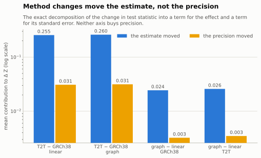
The answer is the same for both axes, and it was not the expected one. Movement is dominated by the estimate in 93.9% to 94.9% of variants, and precision barely moves at all: the median ratio of standard errors between arms is 1.0017 for a reference swap and 1.0000 for an aligner swap.
Neither change buys precision. Both change what is being measured. That matters for how any of this should be described. Where these methods differ they are not reducing noise around a fixed quantity; they are estimating a different one. The single place precision does shift is duplicated sequence, where the aligner's precision term roughly doubles relative to its effect term while the reference's barely moves — pangenomic alignment is measurably changing genotype certainty there, and only there.
That is a statement about the difference between paired estimates. The level of noise each arm carries is a separate question, and it has the same answer. At matched allele frequency the median standard error is 0.04579, 0.04581, 0.04578 and 0.04581 across the four arms — identical to the fourth decimal. Splitting by sequence class does not separate them either: in duplicated sequence the graph-to-linear ratio is 1.000 and the T2T-to-GRCh38 ratio 1.008, the largest entry in the table being T2T carrying standard errors slightly larger than GRCh38 exactly where a gain would be most expected.
No arm is measurably less noisy, anywhere. Standard errors are higher in duplicated sequence than in ordinary sequence in every arm, and no method change repairs that. Whatever these choices are doing, they are not improving the precision with which a shared variant is measured.
There is a second way to ask the same question that needs no association model at all. The same 225 donors and the same normalised allele must give the same allele frequency, so any difference proves that the measurement at that site depends on which representation was used. The agreement is logically compelled rather than empirically hoped for, which makes this the cleanest instrument in the analysis — and the median difference is exactly zero in all four contrasts.
Frequencies agree exactly at 70% of sites under a reference swap and 83% under an aligner swap, and fall within 0.01 at 96.2% and 98.4% respectively. The 1.6% to 3.9% that fall outside it are the sites whose measurement is representation-dependent. The comparison is unsigned: it does not say which arm is wrong, and truth may be the higher or the lower frequency.
Worth noting because the two instruments share no statistics: the chromosomes carrying the most frequency discordance are chr19, chr22, chr17, chrX, chr6 and chr21 — the same set the association analysis identifies below, arrived at from genotype frequencies alone.
Every number so far is unanchored. A correlation of 0.94, or 3.8% of sites with a shifted allele frequency, means nothing without knowing what a change of comparable weight looks like. The variant caller supplies that. Swapping DeepVariant for HaplotypeCaller is a decision most groups make without discussion, and it can be measured on exactly the same instrument.
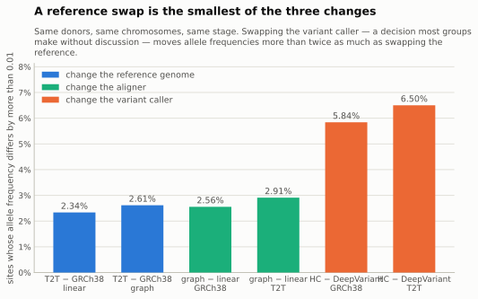
| What was changed | Axis | Variants compared | Frequencies identical | Differing by > 0.01 |
|---|---|---|---|---|
| T2T − GRCh38 · linear | reference | 1,857,319 | 72.7% | 2.34% |
| T2T − GRCh38 · graph | reference | 1,874,886 | 74.7% | 2.61% |
| graph − linear · GRCh38 | aligner | 9,808,355 | 87.4% | 2.56% |
| graph − linear · T2T | aligner | 10,089,116 | 85.1% | 2.91% |
| HaplotypeCaller − DeepVariant · GRCh38 | caller | 9,374,537 | 77.7% | 5.84% |
| HaplotypeCaller − DeepVariant · T2T | caller | 9,776,764 | 68.9% | 6.50% |
223 donors present in all six callsets, across chr1, chr6, chr17, chr19, chr22, chrX. Frequencies are recomputed identically from each callset, so no axis has an advantage of stage, donor set or region. Cross-reference rows are restricted to variants carrying a unique normalised identity in both references, which same-reference rows are not — see the note below the figure.
A reference swap is the smallest of the three changes. It shifts the frequency of 2.47% of sites, against 2.73% for an aligner swap and 6.17% for a caller swap — the caller being 2.3 times the aligner and 2.5 times the reference. Anyone comfortable with their choice of variant caller has already accepted a larger perturbation than the one this page is about.
The caveat is the finding, not a footnote. A cross-reference comparison can only be made on variants that carry a unique identity in both references — about 1.9 million of the roughly 10 million in each callset. Same-reference comparisons use all of them. So the reference axis above is measured only among variants both references can represent, and the variants only one reference can represent are excluded entirely.
Read the two halves together and they say something sharper than either alone. Where two references can both see a variant, they agree about it better than two aligners do. The reference's distinctive effect is not that it measures shared variants differently — it is what it can see at all. That is what the gene universes and the arm-exclusive variants further down are measuring, and it is where the reference change actually lives.
Two maps can call almost the same number of eGenes while disagreeing about which variants carry the signal and how strongly. A per-arm total is precisely the statistic that would conceal that, because it is a count of winners and says nothing about the surface they were drawn from. Testing it properly needs the whole surface: every cis variant-gene pair in every arm, not just the per-gene best.
That scan is 441,661,674 tested pairs across the four arms. It also functions as an independent audit of everything above, because the permutation-selected leads have to reappear in it unchanged. All 72,774 of them do, at a maximum absolute effect-size discrepancy of 5.9 × 10−8 — so the maps in the previous section are confirmed by a separately computed surface, not merely re-reported. 4 rows out of the 441,661,674 carried TensorQTL's degenerate zero-variance representation and are excluded from every difference below.
Comparing arms requires one common frame. Each variant is reduced to its LiftoverIndel-normalized T2T position, reference and alternate allele, matched across arms on that identity together with the gene, and its slope oriented to the T2T alternate allele. Every matched variant then yields a difference in test statistic between any two arms. Binned into fixed 100-kb windows, those differences separate into two regimes that barely touch.
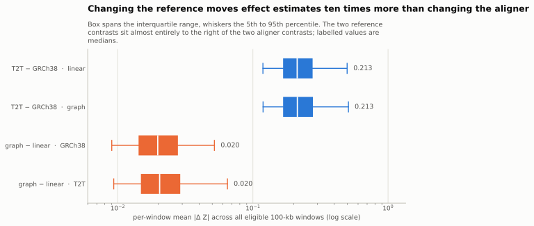
| Contrast | Axis | Matched variants | Occupied windows | Windows ≥ 100 | Median window mean |Δ Z| |
|---|---|---|---|---|---|
| T2T − GRCh38 · linear | reference | 8,045,629 | 27,448 | 26,499 | 0.2127 |
| T2T − GRCh38 · graph | reference | 8,101,362 | 27,485 | 26,540 | 0.2134 |
| graph − linear · GRCh38 | aligner | 8,265,702 | 27,579 | 26,612 | 0.0198 |
| graph − linear · T2T | aligner | 8,372,973 | 27,910 | 26,691 | 0.0204 |
Every contrast matches the same gene and the same LiftoverIndel-normalized allele, so these are like-for-like comparisons of the same variant on two processings of the same donors. Windows are fixed, non-overlapping, and in T2T coordinates.
Changing the reference genome moves the effect estimate about 10 times as much as changing the aligner: a median window mean |Δ Z| of 0.213 against 0.020. The separation is not a difference of averages over overlapping distributions. The 5th percentile of either reference contrast (0.119) sits above the 95th percentile of either aligner contrast (0.065), so a typically-quiet window under a reference swap is still noisier than an unusually loud window under an aligner swap.
What the aligner axis actually measures. The graph arms are aligned against the pangenome and then surjected back into linear coordinates before variant calling, so their genotypes are emitted against a linear allele representation. Pangenomic alignment improves where reads are placed; after surjection it cannot contribute alleles that the linear reference has no way to write down. That is the most economical explanation for why the aligner contrasts are an order of magnitude smaller, and it bounds the claim: this comparison measures the value of pangenomic read placement, not the value of pangenomic variant representation. Those are different propositions and it would be easy to read the first as the second.
Within the reference contrasts the discordance is not spread evenly across the genome. Ranking windows by mean absolute difference and by the mean within their own upper 5% tail, screening the leaders against count-matched windows, and calibrating with 10,000 chromosome-wise circular rotations, leaves 13 distinct windows in the top ten of either reference contrast. Every one carries at least 100 exactly matched variants. 7 of the 13 show the same reference effect under both aligners, which turns out to be the most informative thing about them.
The obvious worry about any reference-difference result is that it is a mapping artifact rather than a mapping improvement. Segmental duplications are where GRCh38 collapses paralogous copies onto one locus, and a fixed difference between the copies then reads as a heterozygous variant in nearly every donor. If T2T resolves that duplication, the genotype changes character and so does the eQTL estimate — but so it would if the reads were simply being misplaced in a new way. Segdup enrichment alone cannot separate those two stories, because both predict it.
The factorial design can. The reference contrast is measurable twice, once under each aligner, and the two aligners treat paralogy differently: haplotype-sampled pangenomic alignment resolves copies that a linear aligner collapses. A reference effect present under both aligners is therefore a property of the reference. One that appears under a single aligner is a reference-by-aligner interaction — at that locus the two factors are entangled, and the reference difference cannot be read on its own.
This is not a replication argument, and it should not be mistaken for one. The four arms are not four attempts at the same experiment. The reference and the aligner are the experiment, and there is no expectation that they agree; the question is only which of the two a given difference can be attributed to.
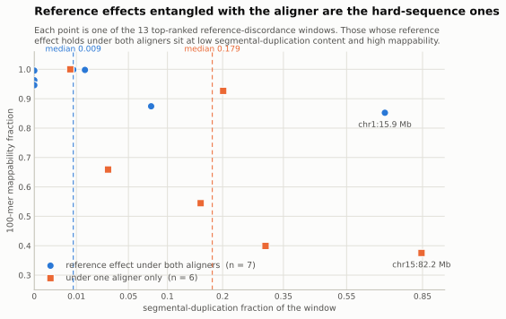
| Window sequence context, median | Reference effect under both aligners (n = 7) | Under one aligner only (n = 6) |
|---|---|---|
| Segmental duplication | 0.009 | 0.179 |
| 100-mer mappability | 0.963 | 0.602 |
| Repeat content | 0.538 | 0.984 |
| Human accelerated region | 0.000 | 0.004 |
Base-pair fractions of each 100-kb window, from native T2T annotation tracks. With 7 windows against 6 this is a description of the two groups, not a powered test; a two-sided rank-sum comparison of the segmental-duplication fractions returns p = 0.10.
The split runs the way it would if entanglement with the aligner were confined to hard sequence. Windows whose reference effect holds under both aligners have a median segmental-duplication fraction of 0.009 and median mappability 0.963; those confined to one aligner sit at 0.179 and 0.602. The interaction with the aligner is concentrated exactly where read placement is contestable, and the 7 aligner-independent windows are largely ordinary sequence where paralog collapse is not an available explanation.
This is a description of 13 windows, not a test, and it should not be read as one — a two-sided rank-sum comparison of the duplication fractions returns p = 0.10. One window, chr1:15.9 Mb, holds under both aligners while sitting at 0.69 duplication content, so the rule is a tendency rather than a partition.
| Window (T2T) | Both aligners | Variants | Mean |Δ Z| | Segdup | Mappability | cCRE overlap | ClinGen recurrent-CNV breakpoint | Anchor genes |
|---|---|---|---|---|---|---|---|---|
| chr1:15.9 Mb | yes | 253 | 2.27 | 0.693 | 0.852 | 106 / 299 | — | CROCCP3, LINC01772, LINC01783, RNU1-1 |
| chr12:9.4 Mb | yes | 422 | 5.14 | 0.077 | 0.874 | 90 / 536 | — | DDX12P, LOC374443, LOC408186, LOC728715 |
| chr19:36.8 Mb | yes | 216 | 3.44 | 0.014 | 0.998 | 75 / 218 | — | GARRE1, GPI |
| chr2:42.3 Mb | yes | 218 | 6.03 | 0.009 | 0.999 | 77 / 218 | — | COX7A2L |
| chr10:51.6 Mb | yes | 244 | 6.30 | 0.000 | 0.963 | 23 / 268 | LCR10q11.2F | ASAH2B |
| chr13:109.8 Mb | yes | 481 | 2.07 | 0.000 | 0.995 | 223 / 483 | — | ING1, NAXD, RAB20 |
| chr14:18.1 Mb | yes | 388 | 2.98 | 0.000 | 0.946 | 123 / 424 | — | DHRS4, DHRS4-AS1, DHRS4L2 |
| chr15:82.2 Mb | — | 165 | 2.42 | 0.846 | 0.375 | 11 / 165 | LCR 15q25.2C | GOLGA6L5P, LOC102724135, UBE2Q2P1 |
| chr15:30.3 Mb | — | 186 | 2.59 | 0.302 | 0.399 | 10 / 186 | BP5 | GOLGA8N, LINC02256, WHAMMP1 |
| chr10:51.5 Mb | — | 291 | 3.62 | 0.201 | 0.927 | 57 / 291 | LCR10q11.2F | ASAH2B, SGMS1-AS1 |
| chr8:12.6 Mb | — | 177 | 2.99 | 0.156 | 0.545 | 15 / 177 | REPP | FAM66A |
| chrX:153.7 Mb | — | 109 | 2.11 | 0.031 | 0.659 | 8 / 109 | — | F8A3, TMLHE |
| chr11:73.6 Mb | — | 236 | 1.30 | 0.007 | 1.000 | 39 / 236 | — | PLEKHB1, RAB6A |
The 13 distinct windows ranked in the top ten of either reference contrast, ordered by whether the reference effect holds under both aligners and then by segmental-duplication content. cCRE overlap is evaluated only among variants with a unique normalized GRCh38 position, which is the denominator shown.
Annotating them against ClinGen gives a split result worth stating in both directions. 5 of 13 windows contain variants inside a recurrent-CNV breakpoint or low-copy-repeat interval, and in 3 of them — chr15:30.3 Mb, chr15:82.2 Mb, chr8:12.6 Mb — that is true of every mappable variant the window contains, not merely some; chr10:51.5 Mb reaches 96 percent. But 0 of 13 fall inside a curated region with sufficient evidence for dosage sensitivity. These loci sit in the structural scaffolding that makes recurrent CNVs possible, not in the dosage-sensitive intervals whose disruption is known to cause disease, and the second fact constrains how much the first is allowed to mean.
Of the 3,610 matched variants in these windows with a unique normalized GRCh38 position, 857 overlap a candidate cis-regulatory element. 4 windows overlap a human accelerated regulatory region and 3 contain matched variants inside one.
Gene Ontology was run as a plausibility check against a background of the eligible anchor genes in the same contrast, and it returns essentially nothing: 7 of the 8 gene sets have no enriched term at all. The single exception is instructive rather than encouraging. The graph − linear · T2T set returns 10 terms, every one of them taste-receptor biology — the strongest is bitter taste receptor activity at p = 1.1 × 10−8 on 5 genes — which is the TAS2R cluster, a textbook copy-number-variable gene family. A negative control behaving exactly as a negative control should.
The obvious next question is not how the top ten rank but how many windows anywhere in the genome exceed what chance would produce. That test was run on all four contrasts. It uses the same chromosome-wise circular rotation, except that the quantity recorded on each rotation is the largest window mean anywhere in the genome, so that its upper quantile is a family-wise threshold rather than a per-window one. Across 106,342 window tests and 10,000 rotations, the number of windows that exceed it is 0.
| Contrast | Windows tested | Largest observed window mean |Δ Z| | Median largest under rotation | Family-wise threshold | Beyond chance |
|---|---|---|---|---|---|
| T2T − GRCh38 · linear | 26,499 | 18.99 | 18.67 | 20.19 | 0 |
| T2T − GRCh38 · graph | 26,540 | 18.17 | 16.54 | 19.60 | 0 |
| graph − linear · GRCh38 | 26,612 | 1.15 | 0.95 | 1.17 | 0 |
| graph − linear · T2T | 26,691 | 1.51 | 1.48 | 1.71 | 0 |
10,000 chromosome-wise circular rotations per contrast, with the maximum window mean over the whole genome recorded on each rotation. The third and fourth columns are the point of the table: rotating the genome relocates the largest cluster but does not remove it, so what chance produces is almost exactly what was observed.
The reason sits in the middle two columns, and it is a property of the test rather than of the data. A circular shift slides the score vector along the chromosome; it does not remove the cluster of large differences, it relocates it. Whichever window lands under that cluster after the shift inherits its magnitude, so the largest window mean under rotation comes back nearly equal to the largest one observed — at best a ratio of 1.22 across the four contrasts, and 1.02 in the contrast that matters most. A shift null therefore asks whether a cluster's position is unusual, and the answer to that is no. It cannot be made to ask whether the cluster's magnitude is unusual, which is the question worth asking.
A shift null is not the only option, though, and the second one works. Every window already carries a count-matched robust z: its mean |Δ Z| minus the median across windows holding a comparable number of variants, divided by that stratum's robust spread. The statistic is centred on zero with unit spread by construction, so a normal null predicts a fixed rate in the upper tail, and the amount by which the observed rate exceeds it estimates how much of the flagged set is noise. Holding that estimate at five percent puts the cut at z between 2.70 and 2.81 and leaves 1,350 to 1,858 windows per contrast discordant beyond chance.
| Contrast | Cut | Windows discordant | Share of windows | Estimated FDR | At z > 1.96 instead |
|---|---|---|---|---|---|
| T2T − GRCh38 · linear | z > 2.71 | 1,809 | 6.83% | 4.9% | 2,768 at 24% |
| T2T − GRCh38 · graph | z > 2.70 | 1,858 | 7.00% | 5.0% | 2,808 at 24% |
| graph − linear · GRCh38 | z > 2.81 | 1,350 | 5.07% | 4.9% | 2,564 at 26% |
| graph − linear · T2T | z > 2.75 | 1,599 | 5.99% | 5.0% | 2,738 at 24% |
The cut is chosen per contrast as the most permissive one holding the estimated false-discovery proportion at 5%. That proportion is the normal-null expectation divided by the observed count, so it assumes a normal tail; linkage disequilibrium correlates neighbouring windows, which makes the true null tail heavier and this estimate a lower bound.
At the more permissive z > 1.96 the same tail yields 2,564 to 2,808 windows, but around a quarter of them (24% to 26%) are expected to be noise, which is why the operating point is set by the error rate rather than by the sigma. Either way the answer to the original question is that regional discordance is not a matter of a handful of loci. It involves something on the order of five to seven percent of the testable genome.
That scale also settles the aligner question the thirteen windows could only gesture at. Of the 1,954 windows that either reference contrast flags, 1,713 are flagged under both aligners and only 241 under one — an overlap of 0.88. The reference effect is overwhelmingly a property of the reference and not of the alignment method. The aligner-specific minority behaves exactly as the small sample suggested it would: those windows carry more duplicated sequence (p = 5.1 × 10−3) and lower mappability (p = 7.9 × 10−12) than the windows both aligners agree on. At seven against six that comparison was underpowered; at 1,713 against 241 it is not.
Reducing a window to |Δ Z| discards the difference between a reference that recovers an association and one that loses it. Two signed statistics separate them: the change in association strength, |z| on T2T minus |z| on GRCh38, and the signed movement of the effect itself, z minus z with both arms oriented to the same alternate allele. Each tail is cut independently, at the same five percent.
| Statistic | Direction | Windows | Segmental duplication | Repeat content | 100-mer mappability | Up vs down |
|---|---|---|---|---|---|---|
| Association strength | larger on T2T | 580 | 0.000 (0.482) | 0.447 (1.000) | 0.998 (1.000) | p = 0.536 |
| Association strength | smaller on T2T | 595 | 0.000 (0.497) | 0.458 (1.000) | 0.998 (1.000) | |
| Signed effect | larger on T2T | 378 | 0.000 (0.550) | 0.440 (1.000) | 0.998 (1.000) | p = 0.001 |
| Signed effect | smaller on T2T | 791 | 0.009 (0.523) | 0.463 (1.000) | 0.997 (1.000) | |
| Rest of the genome | — | 25,324 | 0.000 (0.142) | 0.394 (0.633) | 0.999 (1.000) |
Median base-pair fraction per 100-kb window with the 95th percentile in brackets, for the T2T − GRCh38 contrast within the linear workflow. Medians rather than means because these fractions are heavily zero-inflated. Association strength is the mean of |z| on T2T minus |z| on GRCh38; signed effect is the mean of z minus z with both arms oriented to the same T2T alternate allele. The last column is a two-sided rank-sum comparison of the up and down groups on duplication content.
Strength is close to balanced — 580 windows strengthen on T2T against 595 that weaken. The signed effect is not: 378 move up against 791 that move down, and both reference contrasts show the same roughly two-to-one skew.
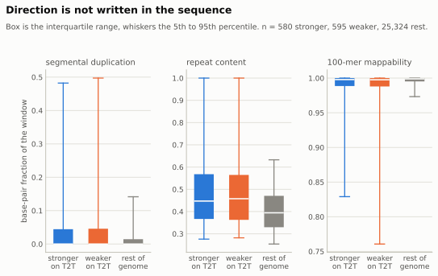
The sequence context is the part worth pausing on, and it needs the distributions rather than their averages. These fractions are heavily zero-inflated: median duplication content is zero in the discordant windows just as it is across the rest of the genome, so an average would suggest a shift that is not there. The difference lives in the tail. The 95th percentile of duplication content is 0.48 among windows where the association strengthens on T2T and 0.50 among those where it weakens, against 0.14 elsewhere; the 5th percentile of mappability is 0.83 and 0.76 against 0.97.
The two directions, though, are not distinguishable from one another at all — on duplication (p = 0.54), on mappability (p = 0.78) or on repeat content (p = 0.94). Difficult sequence predicts that a region will disagree between the two references. It does not predict which way, which puts the direction down to something locus-specific rather than to how hard the region is to align.
The one exception is the signed effect statistic, where the down-shifted windows are modestly more duplicated than the up-shifted ones (p = 9.0 × 10−4) and more repetitive (p = 0.04). Together with the two-to-one count asymmetry, that reads as a systematic downward shift of the test statistic in duplicated sequence on T2T rather than as a regulatory difference — and it points back at genotype quality in exactly the regions where the copy-number question below is still open.
What these numbers are and are not. None of the window statistics on this page is a paired test that two effect estimates differ. Two estimates computed from the same donors on two references are enormously correlated, and a naive paired test of them would be badly anti-conservative. The window size, the minimum-count gate and the tail definition were chosen for this follow-up rather than preregistered, and the ranking is candidate-screened rather than genome-wide adjusted. Treat it as a shortlist for investigation, not as a result.
A list of discordant windows is only interesting if the windows have something in common. Scoring every gene by how far its cis associations move, cutting at an estimated 5% false-discovery proportion, and asking what kind of sequence those genes sit in gives an answer that is the same in every contrast.
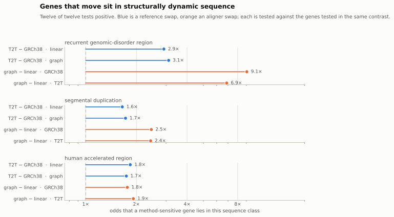
| Contrast | Recurrent genomic-disorder region | Segmental duplication | Human accelerated region |
|---|---|---|---|
| T2T − GRCh38 · linear | 2.9× 20.6% vs 8.2% | 1.6× 11.8% vs 7.5% | 1.8× 14.5% vs 8.4% |
| T2T − GRCh38 · graph | 3.1× 21.8% vs 8.2% | 1.7× 12.2% vs 7.5% | 1.7× 14.1% vs 8.6% |
| graph − linear · GRCh38 | 9.1× 28.1% vs 4.1% | 2.5× 8.8% vs 3.8% | 1.8× 8.7% vs 5.1% |
| graph − linear · T2T | 6.9× 28.3% vs 5.4% | 2.4× 10.7% vs 4.7% | 1.9× 11.3% vs 6.2% |
Odds that a method-sensitive gene falls in each class, against the genes tested in the same contrast — never against the genome, which would manufacture the result. Percentages are the discordance rate inside and outside the class. Fisher tests treat genes as independent and genes in one duplicated block are not, so the odds ratios are the trustworthy part.
Genes whose eQTL results move are 2.9 to 9.1 times more likely to sit in a recurrent genomic-disorder region, and 1.7 to 1.9 times more likely to sit near a human accelerated region — the annotation that exists specifically to mark recent human evolution. Segmental duplication runs between 1.6 and 2.5 times.
Difficulty and biological interest are not two facts here. They are one. These regions are hard to align because they vary so much between people that a single linear reference represents them badly, and between-person variation is the substance of disease genetics — so the same property that makes them hard to measure is what makes them worth measuring. That is why the enrichment above is not a warning about instability. It is the prediction the design was built to test, and it holds on all three axes at once.
The consequence is uncomfortable but specific. Fields with the longest history of difficulty — psychiatry, neurodevelopment, immunology — work disproportionately on loci of exactly this kind. The claim is not that they have been getting wrong answers. It is that they are the fields for which representation choice is not free, while most of genetics can reasonably continue to treat it as inert.
Formal pathway enrichment of the moved genes is, correctly, almost empty: against a background of the genes tested in the same contrast, no term survives multiple-testing correction in three of the four contrasts. Below the threshold the same biology recurs across contrasts — MHC class I antigen processing and presentation, T-cell receptor signalling, allograft rejection, Fc-receptor activation — which is what one would expect if the effect is carried by the MHC and the Fc-receptor loci rather than by immune pathways at large. It is reported here as a consistent tendency, not as enrichment.
Every comparison so far conditions on genes present in both references, which makes all of it blind to the genes that exist in one universe and not the other. Those universes were frozen natively per reference and never intersected, and the difference between them is not what the totals suggest.
| GRCh38 only | T2T only | Shared | |
|---|---|---|---|
| Genes testable | 667 | 508 | 17,606 |
| eGenes among them | 145 | 133 | — |
| Share that are eGenes | 21.7% | 26.2% | 20.8% |
| Absent from the other annotation | 561 | 266 | — |
| Mean duplication content | — | 0.242 | 0.063 |
A gene is in a reference's universe when both of that reference's arms tested it. Duplication content is measured in T2T coordinates and so is available only for the T2T-exclusive and shared sets.
GRCh38 tests 18,273 genes and T2T 18,114 — a net gap of 159. But the universes are not nested: 1,175 genes are exclusive to one reference or the other, and 278 of them are eGenes: real associations callable on one reference and simply unavailable on the other. Exclusive genes are, if anything, more likely to be eGenes than shared ones.
The T2T-exclusive set sits in sequence about four times as duplicated as the shared set (0.242 against 0.063 mean duplication content), which is the same signature every other part of this analysis finds. The 27 ribosomal RNA genes testable only on T2T are the expected consequence of an assembly that resolves the rDNA arrays GRCh38 leaves as gaps.
One caveat has to travel with these numbers. The two universes come from different annotation releases, and a majority of exclusive genes — 561 of 667 and 266 of 508 — are absent from the other reference's annotation altogether. Annotation therefore accounts for much of the turnover, and only the residual is attributable to the reference sequence itself. Both figures belong in any honest statement of this result.
The same question can be asked one level down, of variants rather than genes, and there the two axes behave quite differently. A variant is exclusive to an arm when its normalised identity has no counterpart among the other arm's tested variants; comparing those against the same arm's shared variants asks whether the exclusive ones ever produce an association.
| Contrast | Exclusive variants | Reach |z| ≥ 4 | Shared variants do | Ratio | Duplication content |
|---|---|---|---|---|---|
| T2T − GRCh38 · linear | 44,996 | 5.5% | 6.0% | 0.92× | 0.084 vs 0.065 |
| graph − linear · T2T | 22,785 | 12.4% | 5.9% | 2.09× | 0.154 vs 0.065 |
Computed on chr1 and chr19 only. A variant is exclusive to an arm when its normalised identity has no counterpart among the other arm's tested variants; variants that cannot be placed in the common frame at all are excluded from both groups, and those are the most reference-specific of all. Signal is the best |z| a variant reaches against any gene, which favours variants tested against more genes.
Variants only the pangenome graph can call reach the association threshold 2.1 times as often as the variants both aligners share, and they sit in sequence roughly two and a half times as duplicated. Variants only T2T can call are, if anything, slightly less likely to carry a signal than shared ones (0.92×).
So the aligner is not simply adding variants; it is adding variants that produce signal, in exactly the duplicated sequence a linear aligner has least to work with. The reference adds variants of ordinary informativeness. A yield count sees both as "more variants tested" and cannot tell them apart.
The sharpest form of the question is per gene. Not "are exclusive variants informative on average", but: is a gene's single best association at a variant the other arm cannot represent at all?
| Contrast | Genes whose lead the other arm cannot represent | Share | Among genes reaching |z| ≥ 4 |
|---|---|---|---|
| T2T − GRCh38 · linear | 2,036 of 18,114 | 11.2% | 8.9% |
| T2T − GRCh38 · graph | 2,079 of 18,114 | 11.5% | 9.4% |
| graph − linear · T2T | 864 of 18,114 | 4.8% | 5.0% |
Genome-wide. A variant is exclusive to an arm when it carries a unique normalised identity there and has no counterpart among the other arm's tested variants; variants with no unique identity at all are excluded from both sides, so this is a lower bound. A gene's lead being exclusive does not mean the other arm finds nothing for that gene — only that it cannot find that variant.
About one gene in nine has its top association on a variant GRCh38 cannot represent — 2,036 of 18,114. For an aligner swap it is 4.8%.
This is the mechanical core of the whole comparison. Three results point the same way from different directions. Among variants both references can represent, they agree about them more closely than two aligners do. But 1,175 genes are testable on one reference only, 278 of those are eGenes, and for one shared gene in nine the strongest association sits on a variant the other reference has no way to write down.
The reference's distinctive effect is on access, not on measurement. Where it can see the same thing, it sees it the same way. What changes is what it can see. No comparison of yields, effect sizes, or correlations can reach that, because every one of them conditions on the variants both references share.
One result does not fit the pattern of the others, and it took a stratified analysis to understand it. Measured across the whole cohort, pangenomic alignment on T2T moves chromosome X far more than it moves the autosomes — and no other contrast does anything comparable. Split by sex, the effect turns out to live in a single cell of the design.
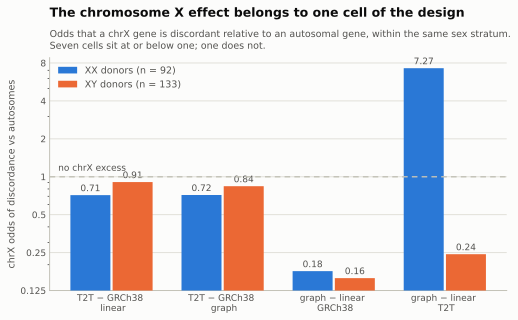
| Contrast | XX: chrX vs autosomal | XX odds | XY: chrX vs autosomal | XY odds |
|---|---|---|---|---|
| T2T − GRCh38 · linear | 3.6% vs 5.0% | 0.71 | 5.3% vs 5.8% | 0.91 |
| T2T − GRCh38 · graph | 3.6% vs 5.0% | 0.72 | 5.0% vs 5.8% | 0.84 |
| graph − linear · GRCh38 | 1.3% vs 6.8% | 0.18 | 1.1% vs 6.7% | 0.16 |
| graph − linear · T2T | 34.6% vs 6.8% | 7.27 | 1.8% vs 7.0% | 0.24 |
Each stratum is compared against its own autosomes, so the difference in stratum size cannot drive the comparison. chrX dosage encoding was audited and is identical across all four arms, which excludes differential ploidy handling.
In XX donors, pangenomic alignment on T2T moves 34.6% of chromosome X genes against 6.8% of autosomal genes — odds of 7.27. In XY donors the same comparison gives 0.24: chromosome X moves less than the autosomes. The remaining six cells sit between 0.16 and 0.91.
This is not a power artifact — the null stratum is the larger one, with 133 XY donors against 92 XX. Nor is it a ploidy-encoding artifact: chromosome X dosages were audited in all four arms and are encoded identically, with hemizygous genotypes appearing as heterozygous in under 2.5% of XY calls in every arm against about 29% in XX.
One mechanism accounts for all four rows. Pangenomic alignment resolves haplotype diversity. A hemizygous X carries one haplotype and offers nothing to resolve, which is why XY shows nothing. GRCh38's own X is poorly resolved, so the graph has no better material to work with there, which is why neither sex moves on GRCh38. Only T2T's complete X together with two X haplotypes gives the graph both the material and the opportunity. It is a three-way interaction between reference, aligner and sex, which is why no two-way analysis found it.
The practical consequence is that a whole-cohort chromosome X analysis in a mixed-sex study reports a diluted version of a much stronger effect in half the samples, and should be stratified. It also means the sex-stratified work that follows — built for an entirely different question — is not separable from the methods question after all.
Sex is one axis on which a method change can fall unevenly across a cohort. Ancestry is the other, and it has a more direct mechanism: a reference genome is a particular sequence from particular people, so how well it represents a donor depends on where that donor's ancestry sits relative to it.
Measuring that needs no association model. Each donor's mean alternate-allele dosage says how far they sit from whichever reference is in use, and the change in it between arms says whether a reference swap moved them closer or further away. This cohort is 104 donors of European, 62 of African and 43 of American projected ancestry, which is enough to compare.
| Ancestry group | Donors | Change in non-reference load on T2T | Change under an aligner swap |
|---|---|---|---|
| EUR | 104 | -0.047 | +0.0009 |
| AMR | 43 | -0.029 | +0.0011 |
| AFR | 62 | +0.017 | +0.0007 |
Median change in mean alternate-allele dosage per donor, a proxy for how far a donor sits from the reference. Kruskal-Wallis across groups: p = 1.3e-38 for the reference swap and 2.7e-07 for the aligner swap. Ancestry labels are projected superpopulation assignments, not self-reported, and groups outside these three are too small to test.
The direction reverses between groups. Moving to T2T reduces the non-reference load of European-ancestry donors by 0.047 and increases it for African-ancestry donors by 0.017. The pattern is identical under both aligners, so it is a property of the reference and not of the alignment.
This is what the two references' provenance would predict. T2T-CHM13 is a single haploid cell line of largely European ancestry; GRCh38 is a mosaic with substantial African-ancestry contribution. Swapping one for the other therefore moves the reference point, and it moves it toward some donors and away from others. The aligner swap does the same test at roughly a fiftieth of the magnitude.
What this does and does not say. It measures reference bias, not accuracy. A donor carrying more non-reference alleles is further from the reference, which is a fact about the reference rather than about the donor or about the quality of their genotypes. It does not show that African-ancestry donors receive worse eQTL estimates on T2T — establishing that would mean linking this shift to those donors' contribution to the discordance measured earlier, which has not been done. What it does establish is that reference choice interacts with cohort composition, and that a study reporting a T2T reanalysis of an ancestrally diverse cohort is not making an ancestry-neutral change.
Does a variant's effect on expression differ between XX and XY donors? The direct test adds a genotype×sex interaction term and asks whether its coefficient is non-zero.
Run on the inverse-normal-transformed expression that is standard for eQTL mapping, the answer across the whole genome, in all four arms, is zero interaction eGenes. Not few — zero. And the null is well-behaved rather than broken: the test statistic distribution matches its theoretical width, and the strongest genome-wide hit is less extreme than noise alone would predict.
Run on log2(CPM+1) expression, the same cohort, the same variants, the same interaction term, yields three to six interaction eGenes per arm.
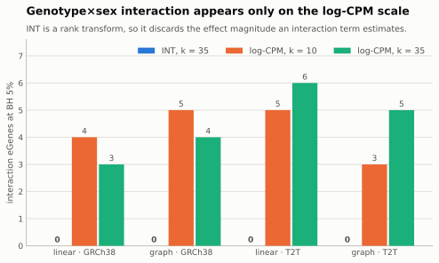
| Arm | INT, k = 35 | log-CPM, k = 10 | log-CPM, k = 35 |
|---|---|---|---|
| linear · GRCh38 | 0 | 4 | 3 |
| graph · GRCh38 | 0 | 5 | 4 |
| linear · T2T | 0 | 5 | 6 |
| graph · T2T | 0 | 3 | 5 |
The reason is mechanical rather than mysterious. The inverse-normal transform is a rank transform: it replaces each gene's expression values with their normal quantile scores, preserving order and discarding spacing. An interaction term is a claim about magnitudes — it says the slope in one group differs from the slope in the other. Rank- transforming the phenotype destroys exactly the quantity the interaction coefficient is trying to estimate, and it does so before the model ever sees the data.
So the two results are not in conflict, and the log-CPM result does not overturn the INT one. They are answers to different questions, and only one of the two scales can express the question that was asked. The practical lesson generalises past this dataset: an inverse-normal transform is a reasonable default for main-effect mapping and a poor one for any analysis whose estimand is a difference in effect size.
A caution on scale, though. These counts are single digits out of more than eighteen thousand genes tested. They are consistent in sign and rough magnitude across four independently processed arms, which is meaningful, but the study is powered to detect a genotype×sex interaction only if it is roughly an order of magnitude larger than a typical main effect. Absence of interaction signal here is not evidence that such effects are rare.
The complementary approach is to stop modelling sex and simply split the cohort, mapping eQTLs separately in the 92 XX and 133 XY donors. This trades statistical power for freedom from any assumption about how sex enters the model.
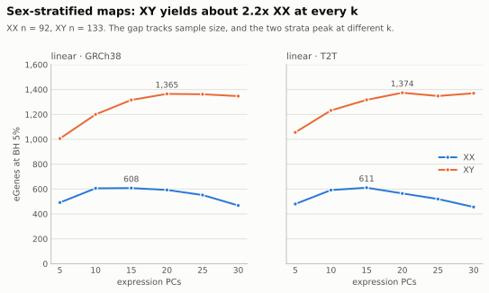
| Arm / stratum | k = 5 | k = 10 | k = 15 | k = 20 | k = 25 | k = 30 |
|---|---|---|---|---|---|---|
| linear · GRCh38 · XX | 492 | 606 | 608 | 593 | 552 | 468 |
| linear · GRCh38 · XY | 1,006 | 1,200 | 1,316 | 1,365 | 1,362 | 1,347 |
| linear · T2T · XX | 480 | 592 | 611 | 565 | 520 | 456 |
| linear · T2T · XY | 1,056 | 1,232 | 1,317 | 1,374 | 1,348 | 1,370 |
| graph · GRCh38 · XX | — | — | 609 | — | — | — |
| graph · GRCh38 · XY | — | — | 1,305 | — | — | — |
| graph · T2T · XX | — | — | 604 | — | — | — |
| graph · T2T · XY | — | — | 1,316 | — | — | — |
The graph arms were run at k = 15 only. Dashes are points that were never scheduled, not failures.
XY produces about 2.2 times as many eGenes as XX at every k tested. It is worth being explicit that this is almost certainly not biology. With 133 donors against 92, the XY stratum has roughly 45 percent more samples, and eGene discovery is steeply power-limited in cohorts of this size — the ratio tracks the sample-size difference, and nothing in these numbers argues for genuinely more genetic regulation in XY brains.
The strata also peak at different k: XX around k = 10 to 15, XY later, around k = 20. Because downstream contrasts need both strata computed identically, k = 15 was adopted as a shared compromise, which is slightly past optimal for XX and short of optimal for XY.
The stratified maps make a sharper question available. For every variant-gene pair, we now have an effect estimate and a standard error in each sex, so we can ask directly whether the effects differ:
z = (bXX − bXY) / √(seXX² + seXY²), with Welch-Satterthwaite degrees of freedom
Computed over every cis pair, that is more than 100 million tests per arm. Which raises the question that decides whether the whole analysis is valid: which pairs do you test?
Testing all 100 million is mostly noise. Some filter to pairs with a real eQTL is needed, and the obvious filter — keep pairs significant in either sex — is a trap. Selecting on either sex's effect and then testing the difference between those same effects biases the difference, because the selection and the contrast share the noise that drove the selection.
The defensible filter selects on the inverse-variance-weighted mean of the two effects:
bivw = (bXX/vXX + bXY/vXY) / (1/vXX + 1/vXY)
This works because Cov(bivw, bXX − bXY) = 0
exactly. The quantity used to select is statistically orthogonal to the quantity being
tested, so selection carries no information about the contrast and BH correction remains
valid.
That is an algebraic claim, and it was checked empirically by simulating a null in which both sexes' effects are drawn around their common mean. Under the ivw rule the null rate comes out at 0.0478 to 0.0479 against a nominal 0.05. Under the either-sex rule it comes out at about 0.171 — a 3.4-fold inflation.
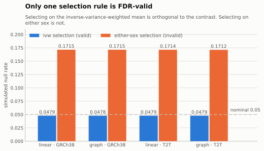
| Arm | cis pairs tested | var(z) | ivw BH 5% | ivw null rate | either BH 5% | either null rate |
|---|---|---|---|---|---|---|
| linear · GRCh38 | 103,242,144 | 1.026 | 3,981 | 0.0479 | 6,691 | 0.1715 |
| graph · GRCh38 | 104,844,987 | 1.026 | 4,019 | 0.0478 | 6,751 | 0.1715 |
| linear · T2T | 101,485,790 | 1.027 | 4,022 | 0.0479 | 7,171 | 0.1714 |
| graph · T2T | 103,265,690 | 1.027 | 4,086 | 0.0479 | 7,382 | 0.1712 |
Only the ivw column is FDR-valid. The either-sex counts are shown so the difference is visible, not because they can be reported as discoveries.
Inside the valid family, 3,981 to 4,086 variant-gene pairs per arm show a between-sex effect difference at BH 5%.
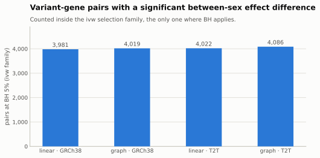
One measurement deserves flagging because it slightly undercuts the p-values above. The variance of z across all pairs is 1.026 to 1.027 rather than 1.0. A theoretical null would give exactly 1. The excess is small but systematic across all four arms, and it means the theoretical p-values are mildly anti-conservative — an earlier permutation analysis put the offset at roughly 5 percent. The counts should be read with that in mind.
Among pairs with a significant difference, the stronger effect is in XX far more often than in XY. That asymmetry has an obvious deflationary explanation that must be excluded before it can mean anything: XX has 92 donors against XY's 133, so XX effect estimates carry larger standard errors, and larger errors produce larger absolute estimates by chance alone. An XX-stronger excess could be pure measurement artifact.
The way to settle it is to build a null in which, by construction, no true sex difference exists, and see how much asymmetry the artifact alone generates. Both sexes' effects are redrawn around their shared inverse-variance-weighted mean, using each sex's real standard error, then pushed through the identical selection, the identical top-K truncation, and the identical collapse to one row per gene.
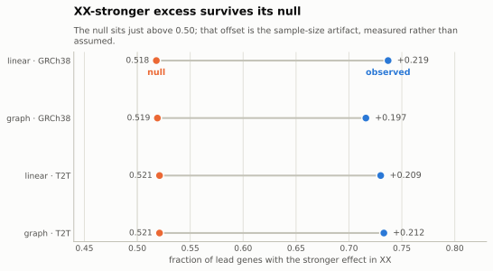
| Arm | Observed XX-stronger | Genes | Null | Null genes | Excess |
|---|---|---|---|---|---|
| linear · GRCh38 | 0.737 | 217 | 0.518 | 3,525 | +0.219 |
| graph · GRCh38 | 0.716 | 208 | 0.519 | 3,539 | +0.197 |
| linear · T2T | 0.730 | 204 | 0.521 | 3,571 | +0.209 |
| graph · T2T | 0.733 | 206 | 0.521 | 3,589 | +0.212 |
The artifact is real and small: the null lands at 0.518 to 0.521, about two points above the 0.500 that a perfectly balanced design would give. The observed value is 0.716 to 0.737. The excess of +0.197 to +0.219 is far larger than the artifact and agrees closely across both references and both aligners.
Two caveats travel with this number and should not be dropped. First, the null draws noise independently for each pair, which destroys linkage disequilibrium: the null's selected pairs spread across roughly 3,500 genes while the observed ones concentrate into about 210, so the comparison is approximate even though the pair counts are matched. A rigorous version would permute sex labels and refit, preserving LD; that has not been run. Second, this must be counted per gene and never per variant-gene pair. In an earlier pass a single large LD block contributed the majority of significant pairs and was XY-stronger, which flipped the apparent direction entirely when counted by pair. Genes, not pairs.
Settled, in the sense of resting on the complete four-arm run tree:
Not settled, and deliberately left open rather than resolved by assertion:
Cohort: BrainVar developmental brain tissue, 225 donors, 92 XX and 133 XY. Genotypes derived per arm; three genotype principal components (the knee is at 3 in all four arms, with the third-to-fourth eigenvalue gap two orders of magnitude above the bulk gap floor). Expression quantified natively against each reference, with gene universes frozen per reference rather than intersected. Association testing with TensorQTL on two NVIDIA L4 GPUs.
Per-stratum degrees of freedom in the stratified analyses are 60 for XX and 101 for XY, from 30 covariates. Between-sex nulls are simulated parametrically with one replicate at a pinned seed. Multiple testing is Benjamini-Hochberg throughout, applied within an explicitly named selection family.
The all-variant scan is the non-interaction model YINT ~ G + C on all
225 donors with 51 covariate columns and 172 residual degrees of freedom, run across the four
arms at k = 35. Cross-arm comparison uses one common frame: each variant reduced to its
LiftoverIndel-normalized T2T position, reference and alternate allele, matched on that identity
together with the gene, with slopes oriented to the T2T alternate allele and each unique variant
contributing once through its nearest-TSS jointly tested anchor. Windows are fixed,
non-overlapping 100-kb intervals in T2T coordinates. The spatial null
is a chromosome-wise circular rotation of paired score tuples over the ordered eligible variants,
at 10,000 rotations after a count-matched screen. The family-wise version records
the genome-wide maximum window mean on each of 10,000 rotations and compares every
window against the upper quantile of that maximum, over all 106,342 window tests in the
four contrasts.
Every figure and every table on this page is generated directly from the run tree by a single collection script, so no number here was transcribed by hand. Figures are rendered in both light and dark palettes from one code path; the palette was checked programmatically for colour-vision separation and contrast rather than by eye.
One reporting convention is worth stating because it changes conclusions rather than presentation: counts of differential effects are reported per gene, never per variant-gene pair, because linkage disequilibrium lets a single locus dominate a pair-level count and reverse its apparent direction.